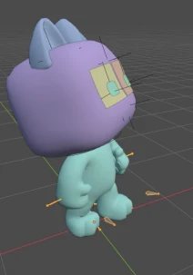
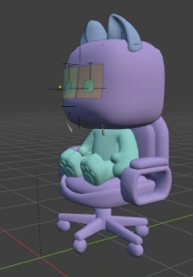
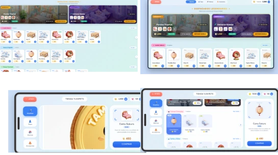
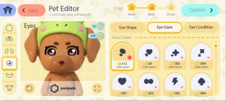

Junio · 2026
Dormir, sentarse y agarrar
Una silla y un sillón podían compartir la animación de sentarse. En junio se prepararon movimientos reutilizables para los personajes y se definió cómo responde cada mueble al tocarlo.
Explorar las piezas ↓ Ver la prueba del mes ↓
Junio · 2026
Avances por sistema

Habitación y animaciónSentarse, dormir y agarrar en distintos muebles
Qué se hizo
Se crearon acciones reutilizables del Yunipet y animaciones propias de los muebles. Se prepararon otros 60 muebles con geometría corregida, texturas desplegadas y puntos de apoyo para colocar objetos encima.
Cómo funciona
La mascota puede reutilizar una postura en muebles compatibles. El objeto tiene su propio esqueleto de animación: algunos movimientos se activan al tocarlo y otros, como el de las plantas, se repiten en bucle.


TiendaDel espacio comercial a la ficha de un objeto
Qué se hizo
Se compararon al menos cuatro distribuciones y se llevaron dos tiendas a modelo con color base, coordenadas de textura y animaciones. Un prototipo en HTML permitió recorrer el catálogo de la demo.
Cómo funciona
La vista ortográfica muestra cómo se distribuyen los productos. Al elegir uno, el recorrido conduce a su previsualización. Las láminas permiten seguir esa decisión desde el plano del local hasta la interfaz.


Creador e interfazDel inicio de la demo al Yunipet personalizado
Qué se hizo
Se diseñó el flujo desde la introducción hasta la creación del personaje. Se exploraron estilos para el cuarto y su editor, y una familia de iconos para representar la personalidad.
Cómo funciona
Al recorrer las pantallas, las elecciones dan forma al personaje. Símbolos pequeños representan rasgos como energía o curiosidad junto a sus datos.

Colección de junio
El personaje en movimiento
Del reposo al movimiento
Cada vista congela un fotograma de una acción del esqueleto original. Compara dónde quedan las patas al tomar asiento, acostarse o alcanzar un objeto.
Reproducir los movimientos
Animación del personaje
Cómo toma asiento y se acuesta
Son dos movimientos del esqueleto original del Yunipet. Reproduce la acción o mueve el control para ver cuándo se doblan las patas y dónde termina el cuerpo.